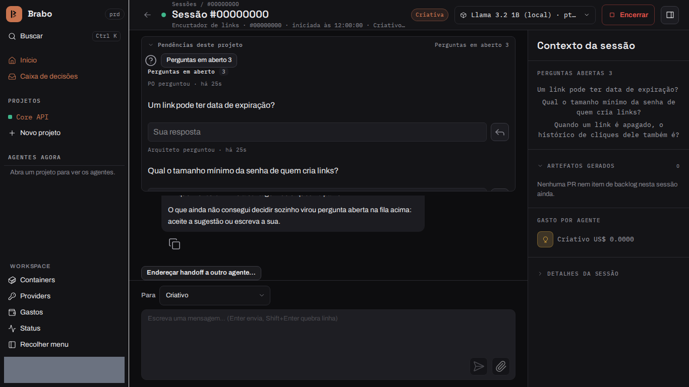

Brabo
由 AI 智能体组成的团队带着你的应用从需求走到部署；合并始终由你决定。


🛑 未经批准，什么都不会发生
每个外部效果都以
每个外部效果都以
proposed_action 的形式产生，并经过项目策略；合并到受保护分支永远由你决定。🧱 智能体在设计上不被信任
迭代、修正和预算的上限都写在代码里。提示词不是保证，代码才是。
迭代、修正和预算的上限都写在代码里。提示词不是保证，代码才是。
📜 一切都被记录且不可变
只追加的事件日志，每个会话内编号连续：成本可审计，备份可验证。
只追加的事件日志，每个会话内编号连续：成本可审计，备份可验证。
👥 一支团队，从简报到交付物
创意、PO、架构师、Dev Lead、按模块划分的开发者、Infra、QA 和 SecOps，工作在真实的 git 仓库上。
创意、PO、架构师、Dev Lead、按模块划分的开发者、Infra、QA 和 SecOps，工作在真实的 git 仓库上。